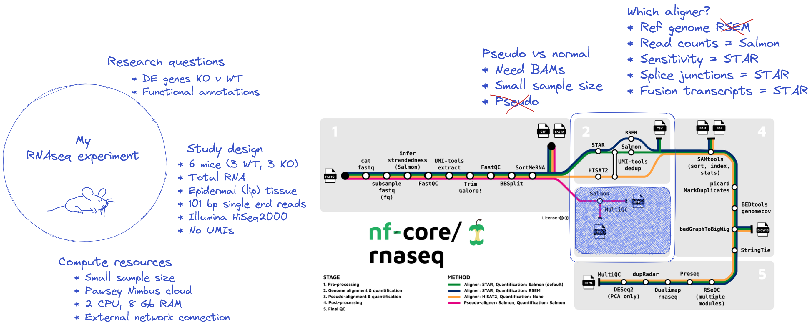
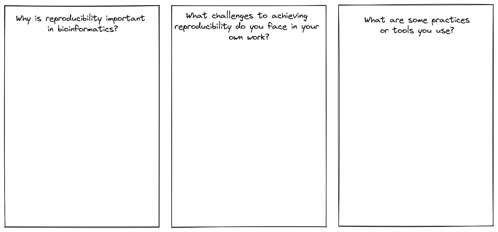

Designing your run command
- Use the nf-core documentation to select appropriate parameters for a run command
- Write and run a nf-core rnaseq command on the command line
- Explore workflow deployment and set up
Download the workflow code
It can be very easy to lose track while working on the command line, especially when we’re working with large datasets and complex commands as we do with bioinformatics workflows. To make sure we work reproducibly, we will be organising our workspace and using a local copy of the nf-core/rnaseq workflow for all exercises.
Start by creating a new directory for all of today’s activities and move into it:
mkdir ~/nfcore-workshop/session2 && cd $_There are a number of ways to download a nf-core workflow to your machine. We recommend using git or nf-core tools. To download the workflow using the nf-core tools utility, read and follow directions here and complete the following exercise:
What command would you run to find and download a copy of the nf-core/rnaseq v3.10.1 workflow using the nf-core tools utility?
Search for the rnaseq pipeline:
nf-core list rnaseqThen, download the correct pipeline:
nf-core download nf-core/rnaseqYou will be prompted to select a version. Use your arrow keys to specify 3.10.1 and hit enter.
ubuntu@georgiedev:~$ nf-core download nf-core/rnaseq
,--./,-.
___ __ __ __ ___ /,-._.--~\
|\ | |__ __ / ` / \ |__) |__ } {
| \| | \__, \__/ | \ |___ \`-._,-`-,
`._,._,'
nf-core/tools version 2.7.2 - https://nf-co.re
? Select release / branch: 3.10.1 [release]
In addition to the pipeline code, this tool can download software containers.
? Download software container images: none
If transferring the downloaded files to another system, it can be convenient to have everything compressed in a single file.
? Choose compression type: none
INFO Saving 'nf-core/rnaseq'
Pipeline revision: '3.10.1'
Pull containers: 'none'
Output directory: 'nf-core-rnaseq-3.10.1'
INFO Downloading workflow files from GitHub
INFO Downloading centralised configs from GitHub Alternatively, to download the most recent version of the workflow from it’s GitHub repository with git, run:
git clone https://github.com/nf-core/rnaseq.gitCheck the workflow has been downloaded:
ls -l nf-core-rnaseq-3.10.1Inside your nf-core-rnaseq workflow directory, you should see 2 subdirectories:
total 8
drwxrwxr-x 7 ubuntu ubuntu 4096 Mar 24 06:08 configs
drwxrwxr-x 12 ubuntu ubuntu 4096 Mar 24 06:08 workflowBuilding your run command
All nf-core workflows are provided with sensible default settings that have broad applicability and comprensive documentation that explains all available parameters. What is ‘sensible’ varies dramatically between different experiments, computing environments, and datasets, so these settings might not suit your needs. For this workshop, consider the experimental design below:
- We won’t run the pseudo alignment step
- We have chosen to use STAR to align reads
- We have chosen to use Salmon to estimate transcript abundance
- We only have access to 2 CPUs and 8Gb of RAM today
- We are working with our own subset data today (including reference data)

Using the nf-core/rnaseq documentation and the diagram above, can you decide which flags you may need to add to this command for this experiment?
nextflow run nf-core-rnaseq-3.10.1/workflow/main.nf \
--input <samples.tsv> \
-profile singularity \
-with-report execution_report_exercise2_1.html \
-with-trace execution_trace_exercise2_1.txt \
-with-timeline timeline_exercise2_1.html \
-with-dag dag_exercise2_1.png💡 You will need to look at the reference genome, alignment, and max job request options.
Given we are using STAR and Salmon as our aligner and quantification tool of choice (respectively) and it is the default choice of this workflow we will not need to provide an --aligner flag. However, if you wanted to provide this for the sake of reproducibility in case things change in the future:
--aligner 'star_salmon'Given we are providing our own subset data for this workshop, we will need to use:
--fasta /path/to/mouse.fa
--gtf /path/to/mouse.gtf
--star_index /path/to/STARGiven we have limited computing resources today, we will need to specify a ceiling for both memory and CPUs:
--max_memory '6.GB'
--max_cpus 2 Is everyone ok?
👏 (clap) yes, lets move on.
😢 (cry) no, please help.
Run the workflow
Make a new working directory for this lesson and move into it:
mkdir ~/nfcore-workshop/session2/exercise1 && cd $_For the sake of expediency, we are using prepared subset data for this session. All the data (including fastqs, input manifest, reference fasta, gtf, and STAR indexes) are available on the CernVM-FS file system. CernVM-FS is a read-only file system that Pawsey have used to store files such as containerised tools (Biocontainers), reference datasets, and other shared resources that are commonly used by many researchers. Take a look here for more information on bioinformatics resources provided by Pawsey on Nimbus.
Take a quick look at the workshop data we’re working with today:
ls /path/to/aarnet-cvmfs/training/workshopMaterialsWe need to store this path in a variable for our run command:
materials=/path/to/aarnet-cvmfs/training/workshopMaterialsNow run the workflow:
nextflow run nf-core-rnaseq-3.10.1/workflow/main.nf \
--input $materials/samples.tsv \
-profile singularity \
--fasta $materials/mm10_chr18.fa \
--gtf $materials/mm10_chr18.gtf \
--star_index $materials/STAR \
--max_memory '6 GB' --max_cpus 2 \
--outdir ex1_results \
-with-report execution_report_exercise2_1.html \
-with-trace execution_trace_exercise2_1.txt \
-with-timeline timeline_exercise2_1.html \
-with-dag dag_exercise2_1.pngReproducibility is a state of mind
We have to wait for the workflow to run (this should take ~17 mins) before we can get on with the other exercises. While we wait, lets discuss how we manage reproducibility in our own practices, and share some useful resources with one another:

Key points
All materials copyright Sydney Informatics Hub, University of Sydney